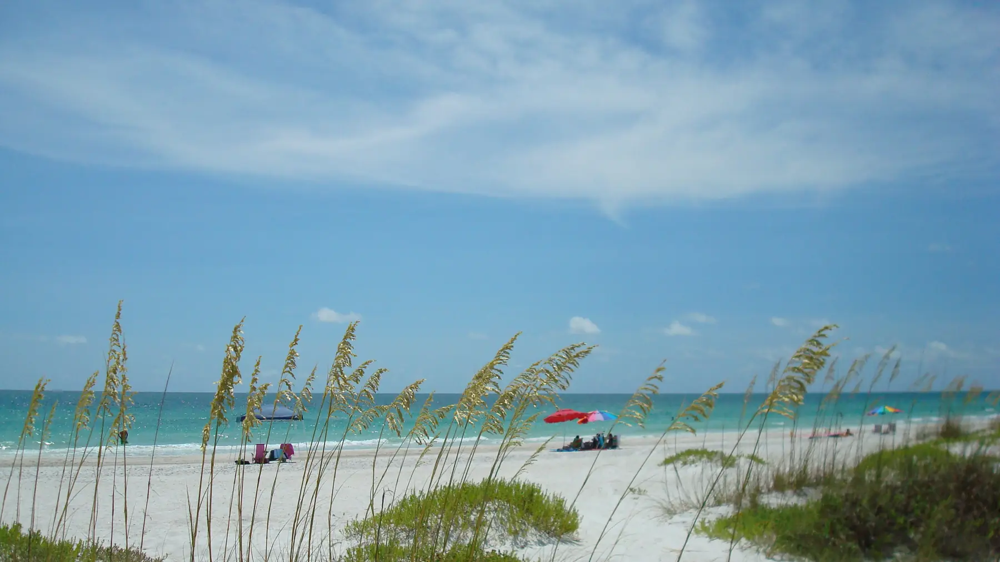

The Islands and the Coast
Anna Maria Island
Manatee County, Florida
Photo Ann Caron, via Wikimedia Commons · Creative Commons Attribution ShareAlike 3.0
Anna Maria Island is seven miles of barrier island running north from Longboat Pass, and it holds three separate municipalities. Anna Maria at the north end, Holmes Beach in the middle, and Bradenton Beach at the south. They share a beach and very little else, including their rules.
What that means practically is that two houses a mile apart can have completely different rental rights, height limits, and setback requirements. If you are buying here to rent the property when you are not in it, the municipality matters more than the address.
- To the Beach
- On the island
- Typical Range
- [[FILL IN: pull from Stellar MLS]]
- What Was Built Here
- Old Florida cottages, raised coastal homes, newer elevated builds
The Details
What defines Anna Maria Island.
- Three separate city governments with three separate sets of rules
- Short term rental regulations that vary by city and by zoning district
- Elevated construction, with most newer homes built well above grade
- The free island trolley running the length of Gulf Drive
- Coastal high hazard flood zones across much of the island
Questions
What people ask about Anna Maria Island.
Can I rent out a home on Anna Maria Island?
Sometimes, and the answer depends on which of the three cities the property sits in and how the parcel is zoned. Minimum rental periods, occupancy caps, and registration requirements are all set locally rather than county wide, and they have been revised more than once. Before you buy anything here with rental income in mind, she confirms the rules for that exact parcel in writing.
What is different about insuring an island property?
Most of the island falls in coastal high hazard flood zones, which changes both what coverage is required and what it costs. Wind coverage is frequently written separately. The elevation of the structure matters enormously, and an elevation certificate can shift a premium by thousands per year. Jennifer gets quotes on a specific address early rather than at the end of a contract.
Is the island the same market as mainland Bradenton?
No. Island inventory is smaller, prices per square foot are substantially higher, buyers are often paying cash or buying with rental income in mind, and homes can take longer to sell. It moves on its own cycle and comparable sales from the mainland tell you almost nothing about it.
Nearby